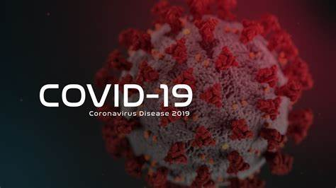

Вперше вид коронавірусів був виявлений у 60-х роках минулого століття. Нині вчені визначили 39 видів цього вірусу. Найбільш небезпечними до теперішнього часу вважалися атипова пневмонія (смертність – 10%) і Близькосхідний респіраторний синдром (смертність – близько 40%). В кінці минулого року нашу планету накрила нова епідемія COVID-19, яка потім набула масштабів пандемії. Нині в світі налічується понад 12 мільйонів інфіковних коронавірусом, від COVID-19 померло понад 500 тисяч осіб Вчені вважають, що коронавірус – не останній представник смертельних вірусів. Людству ще належить зіткнутися з багатьма різновидами вірусів. Але основну проблему вчені вбачають у тому, що стикаючись кожен раз з новим видом вірусу, людство виявляється не готовим до такої зустрічі. Саме з цієї причини, вчені всього світу закликають вкладати кошти в розвиток медицини та науки в усіх сферах. Ну а від нас вимагається поки дотримання заходів особистої гігієни: мити руки з мило і обмежувати тісні контакти один з одним.
